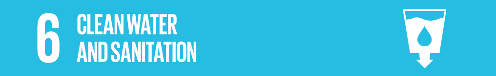

Solutions
SusWASH program
WaterAid’s sustainable water, sanitation and hygiene programme, or SusWASH, is a three-year initiative. The SusWASH Programme (implemented in Cambodia, Ethiopia, Uganda and Pakistan) aims to ensure that WASH access is both inclusive and sustainable.

Un Water
The united nations set "clean water and sanitation" as goal 6 of its "sustainable development goals"
The goal is to "ensure access to safe water sources and sanitation for all."
Various targets have been set, the most of which are aimed to be completed by 2030
To improve sanitation and access to drinking water, there needs to be increased investment in management of freshwater ecosystems and sanitation facilities on a local level in several developing countries within Sub-Saharan Africa, Central Asia, Southern Asia, Eastern Asia and South-Eastern Asia.
circle of blue
Circle of blue is literally the "voice" of water
The organisation works with journalists, scientists and policy makers to communicate water challenges across the globe.

The Water Project
This organisation is non profit and provides reliable water projects to commiunities in sub-Saharan Africa.
It aims to relieve the people's sufffering from a lack of access to clean water and proper sanitation.
Their in-country teams build water wells, sand dams, spring protections, and other water solutions. These projects are also followed up to ensure the solutions are sustainable.